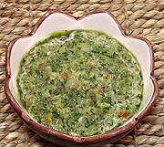

|
Sofrito - (Informal)Puerto Rico - Sofrito | ||||
| Makes: Effort: Sched: DoAhead: |
2 cups ** 25 min Yes |
Sofrito, an indispensable flavor base for Puerto Rican cuisine, is made in batches as a kitchen staple. This is a quick version for home kitchens. See also Alternatives. | |||
|
|
----- 5 6 6 7 6 ----- 1/2 3 1/2 |
--- oz oz cl oz --- c t t |
-- Vegies Tomato Onion Garlic Cubanelle Chilis (1) Aji Dulce Chilis (2) ---------- Cilantro Culantro Leaf (3) Oregano, dried Salt |
Make as much as you think you will need in a reasonable time, and freeze what you won't use in a few days. Make - (25 min)
|